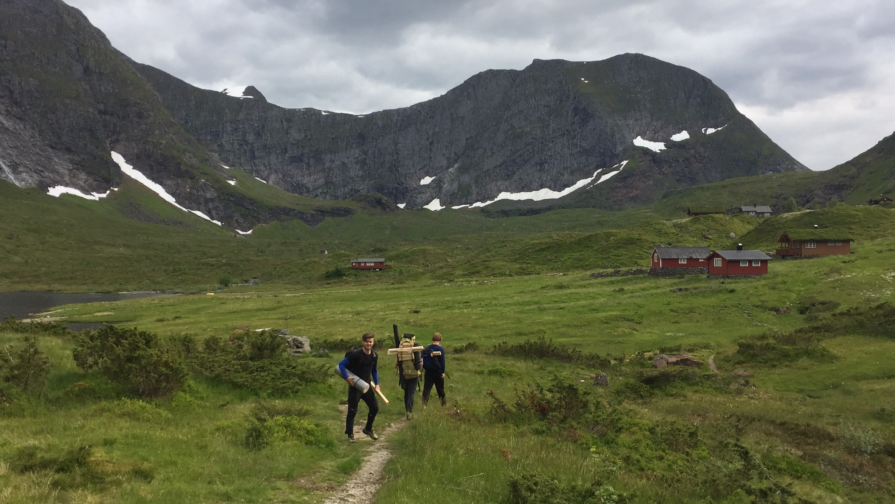
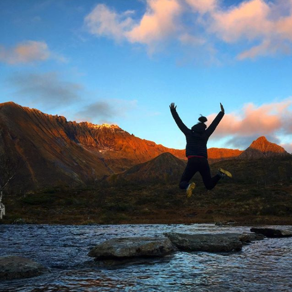
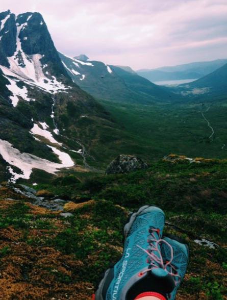

Skorgedalen

Den mest populære familieturen på Vartdal i solsteiken, med fleire koselege hytter
og eit stort vatn der man kan ta seg eit avkjølande bad eller kanskje fiske
seg ei krede.
Veibeskriving: Følg skilting frå E39 innover mot Aarsetdalen.
Følg vegen i 3-4 minutt til du kjem til den deler seg opp i to.
Ta der til høgre, og fortsett igjen i nokre minutt til du ser ein
grusveg som går litt oppover. Følg grusvegen, og ta der til høgre
ved veiskillet, betal bompengane, og kjøyr forsiktig
opp den kronglete vegen til det seier stopp. Parker bilen, og
følg råsa til venstre over elva.
Hald same rås heilt til du ser det
store vatnet på venstre side, med hyttefelt på andre sida.
Tid: 15-20 minutt
Vassdalen

For ein lett trimtur i vakre omgivelsar, er Vassdalen eit perfekt
utgongspunkt. Vidare frå Vassdalen fins det fleire fjell ein kan
bestige om ein ikkje er metta.
Veibeskriving: Følg skilting frå E39 innover mot Aarsetdalen.
Følg vegen i 3-4 minutt til du kjem til den deler seg opp i to.
Ta der til høgre, og fortsett igjen i nokre minutt til du ser ein
grusveg som går litt oppover. Følg grusvegen, og følg skiltinga ved
krysset framover mot Vassdalen. Når grusvegen endar, følgjer du råsa
vidare inn, og opp dalen til ein kjem til det store vatnet.
Tid: 15-20 minutt
Bjørnaskaret

Med nydeleg utsikt over Årsetdalen på eine sida og Longedalen på andre sida,
er Bjørnaskaret ein ypperleg tur for familien, eller om ein bare vil
ha seg litt frisk luft med god samvittigheit. På Bjørnaskaret kan ein også
bevege seg vidare opp mot Vassdalstinden (1277 moh.), og krysse av
Vartdals høgaste fjell frå lista.
Veibeskriving: Følg skilting frå E39 innover mot Aarsetdalen.
Følg vegen i 3-4 minutt til du kjem til den deler seg opp i to.
Ta der til venstre, og fortsett framover dalen til vegen deler
seg på ny. Ta atter ein gong til venstre og fortset til du kjem
til ein bompenge-stasjon. Gå antet til fots derfrå, eller betal
avgifta og kjør så longt framover som mogeleg. Etter å ha parkert
bilen er det berre å fortsette i samme retning til fots,
med skaret fremst i dalen som mål. Råsa er godt vedlikehaldt
med både trakka rås og trebruer der myra er på sitt fuktigaste.
Tid: 30 minutt om ein kjøyrer så longt som råd.